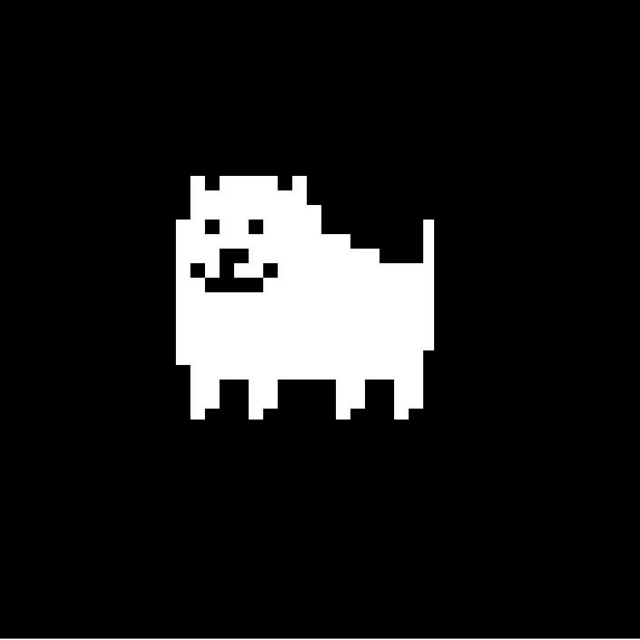

La banda sonora de UNDERTALE
UNDERTALE es un juego RPG lanzado en el 2015 por el desarrollador y compositor Toby Fox. El juego fue un exito y llego a ser el mejor juego para PC del 2015 en algunos tops. Algo que le ha llamado mucho la atención a los jugadores ha sido la banda sonora de este juego. La mayoria de esta es musica 8-bit, simbolizando el juego en si. Pero muchas canciones de esta banda sonora comunican un mensaje bastante profundo, al ser el juego ya lo suficientemente profundo en si mismo. Esto ha atraido gente a probar el juego y es una de las características mas famosas e importantes de UNDERTALE.
